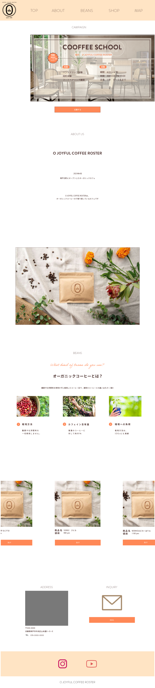
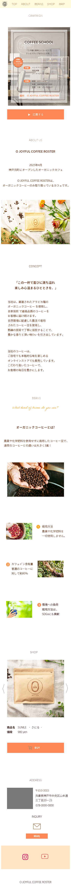

ペルソナ（ターゲット像）
年齢層：20〜40代、特に健康志向・ライフスタイルにこだわりがある層
ライフスタイル：仕事やプライベートで忙しいが、コーヒーでほっと一息つく習慣がある
SNSで食やカフェをシェアするのが好き
健康・環境への配慮を意識している
悩み：普通のコーヒーは健康面で不安（カフェイン量・添加物など）
オーガニックの良い豆を選びたいけど、情報が少ない
おしゃれに楽しめるコーヒー体験を求めている
◯オーガニックコーヒーの魅力を分かりやすく解説
→ 「栽培方法・カフェイン含量・環境への貢献」などを
シンプルに伝えることで安心感を与える
◯オンライン購入のしやすさ
→ 商品画像＋BUYボタンで、迷わず購入できる導線を確保
◯ブランド体験の拡張
→ 「COFFEE SCHOOL（体験型イベント）」を掲載し、
ただ買うだけでなくコミュニティを感じられる場を提供
◯ナチュラルで清潔感のある色味
白背景＋ベージュ＋オレンジ
→ オーガニックで安心感を演出しつつ、コーヒー豆の色味と調和
◯分かりやすい3つのメリット紹介
「栽培方法」「カフェイン」「環境」など、ユーザーが気になる点をすぐ理解できるように構成
◯写真の使い方
自然光や花を使った商品写真 → 「日常に取り入れたくなるおしゃれ感」を演出
コーヒー豆を収穫するイメージ → 生産背景の信頼性を強調
◯ブランドの世界観を体験できる要素
「COFFEE SCHOOL」を載せることで、ただの商品販売ではなく
「学び・体験」を提供するブランド姿勢を表現

